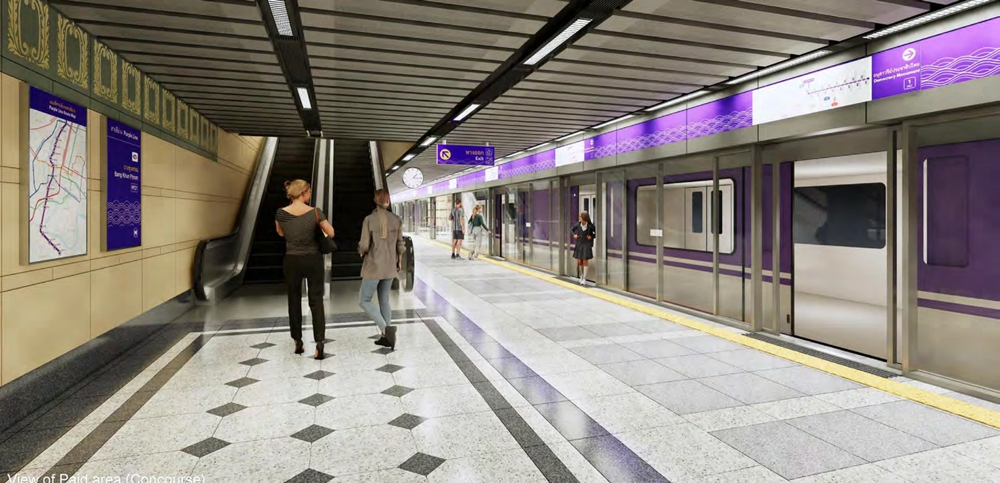

Bangkok MRT
From station planning to technical detail.

From station planning to technical detail.
Underground stations bring passenger circulation, services and structural constraints into a tightly coordinated environment. This selection presents station planning, Revit modelling and drawing production within a wider project team.
Communicate the relationship between passenger routes, station levels and building services.
A clear idea.
Spatial consequences.
At PP18, I helped revise the AHU room layout around equipment dimensions, access and maintenance routes, and removable panels. I also developed entrance and stair access around escape criteria and flood-protection levels.
PP18 plans and sections, entrance drawings and service-space studies. Work completed within the DPA project team.
The drawing room.
Plans and sections reveal
what an image can't.
Original annotated drawing / not to scale.
Original annotated drawing / not to scale.
Original annotated drawing / not to scale.
From the inside.
Material, light and the
scale of occupation.
Project context and image notes
Purple Line / PP18 + PP21 / DPA project team. The original project material supports this selection.
Images marked AI-assisted are presentation studies. Original drawings remain the reference for dimensions, labels and geometry.